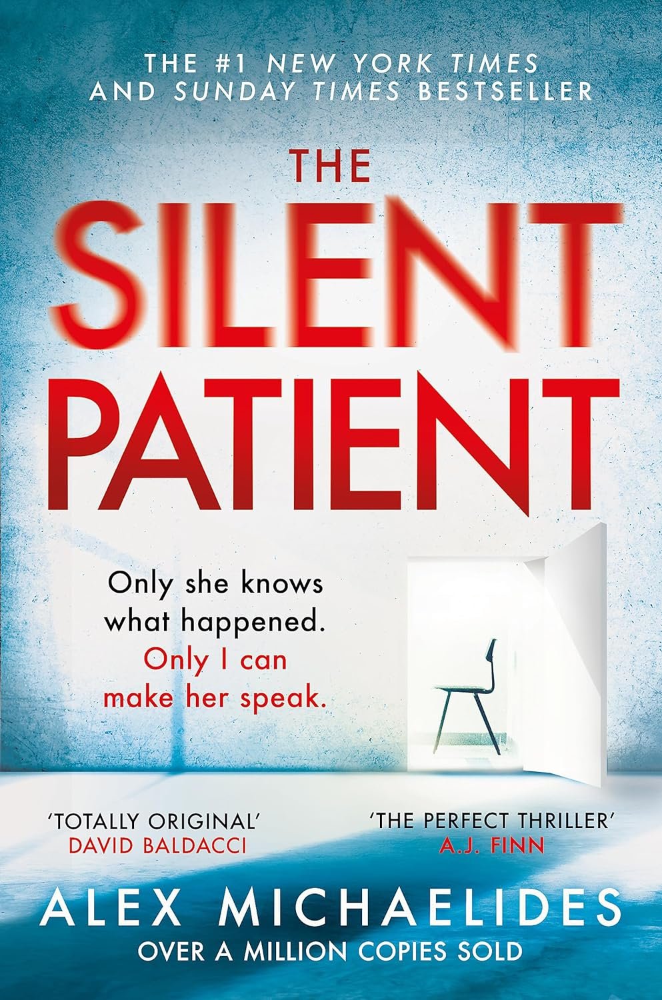

Featured Books
A Good Girl's Guide to Murder
Thriller
A Little Life
Fiction

Atomic Habits
Self-help

Can't Hurt Me
Self-help
Fifty Shades of Grey
Romance

Don Quixote
Fiction

I Had That Same Dream Again
Fiction
Then She Was Gone
Thriller
No Longer Human
Fiction

Ikigai
Self-help
Kiki's Delivery Service
Comic
Milk & Mocha
Comic

No Longer Human
Fiction

The 48 Laws of Power
Self-help
I Want to Die But I Want to Eat Tteokbokki
Comic
The Night Circus
Fantasy